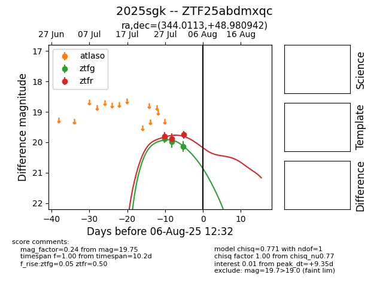

Target 2025sgk at 2025-08-06 17:07, see:
FINK: fink-portal.org/2025sgk
Lasair: lasair-ztf.lsst.ac.uk/objects/2025sgk
ALeRCE: alerce.online/object/2025sgk
TNS: wis-tns.org/object/2025sgk
YSE: ziggy.ucolick.org/yse/transient_detail/2025sgk
alt names
ZTF25abdmxqc (ztf,fink)
2025sgk (tns,yse)
coordinates:
equatorial (ra, dec) = (344.0113,+48.98094)
galactic (l, b) = (104.1960,-9.64744)
photometry
last ztfg=20.14, ztfr=19.75
3 ztfg, 3 ztfr detections
